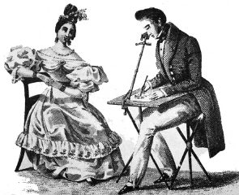
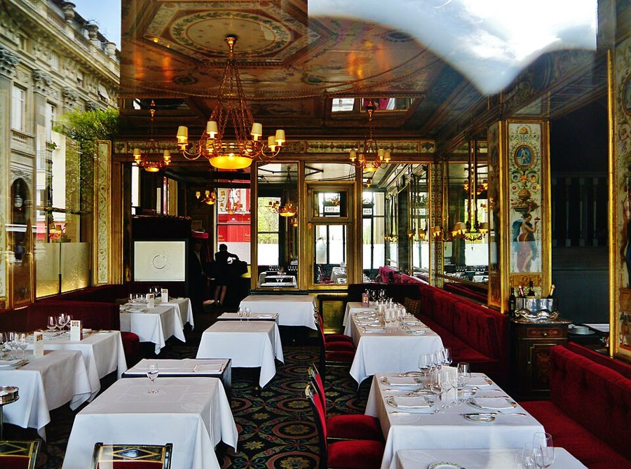
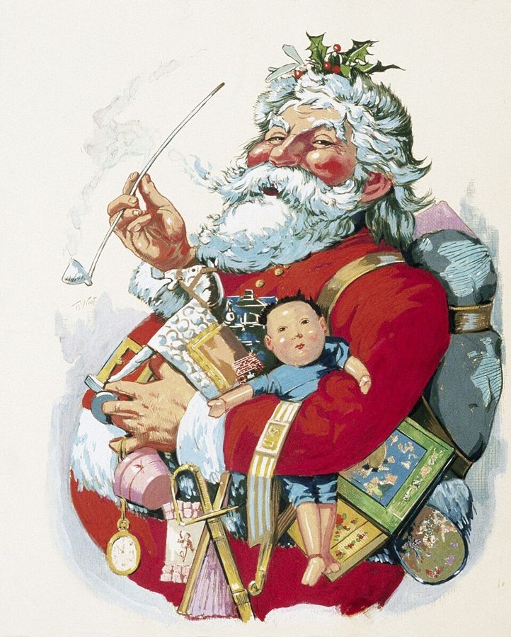
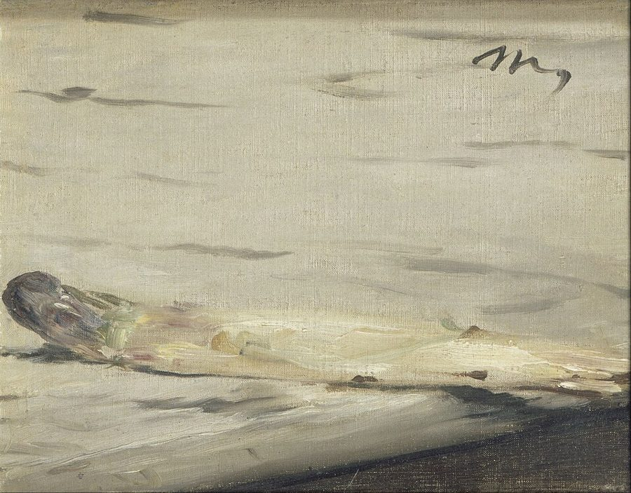
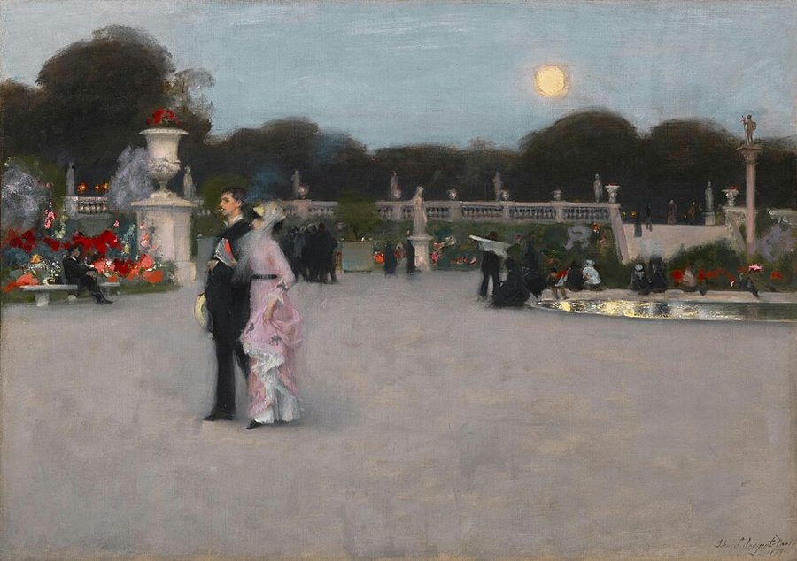
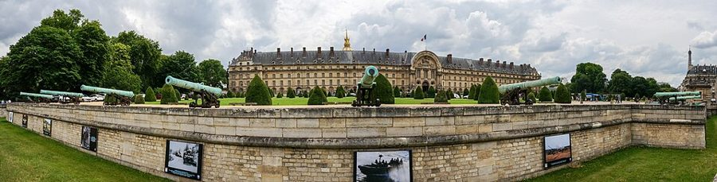

这一篇在做什么
作者一家在巴黎的第四个圣诞写下的私人日记，十七小段。这年春天房东要收回公寓，一家人一度想提前回纽约，最后只搬到三条街外。作者生日收到一台「描画世界的机器」，拿它对着巴黎描图。日记从搬家、外卖、医院、橱窗写到 Luke 夹在两种语言之间，再拉远写法国人的规矩、「宁静」和关着门的小圈子。读的时候抓两条线：作者怎样从「比较」转向「只是看」；离开巴黎的念头怎样起起落落。

用明箱（camera lucida）画像的旧版画，19 世纪上半叶，确切年代不明（说明页原标 1807 年，页上另有人指出画中服饰是 1830 年代的）。作者收到的「描画世界的机器」就是这东西的塑料玩具版。User Dpbsmith on en.wikipedia，公有领域，维基共享资源 读之前：这篇的来历
这是作者每年圣诞写给自己的日记，不是《纽约客》的专栏；作者在第 1 篇说，这些日记比随笔更沉思、也更悲观。文中没写年份，但线索都指向 1998 年底：一家人在巴黎「将近四年」，亚洲金融风暴让派驻东京的房东提前回来（第 2 篇讲过这套房子的来历），Luke 四岁，上着全天的幼儿园。它在书里第四部分，这一部分就用这篇的题目命名。前一篇写美国名厨 Alice Waters 想在卢浮宫开餐厅，后一篇写 Balzar 保卫战的结局。
一个注定站在外面的人，怎样和一座城相处：拿它和家乡比，照着它描，还是干脆跳进去？
读的时候带着这几个问题。不用先找答案，读完回来对照「检查一下理解」。
快要失去巴黎时，一家人反而「更巴黎」了。作者给了两种解释，你更信哪一种？§1
描画机器为什么「只是描」反而最难？它和作者后来谈法国作家有什么关系？§2 §9
Luke 在两种语言之间是什么处境？作者从他身上看见了自己的什么？§5 §6
作者说巴黎对谁都敞开。这是在夸巴黎，还是在叹气？§11 §13
这一篇的路线
十七小段不按时间排，像一本剪贴簿，长的近九百词，短的只有两三句。但有几条线反复出现：「要不要走」在开头露面，到后半又一节一节冒出来；描画机器在 §2 出场，§9 变成谈法国作家的钥匙，§15 又被拿起来描一条公交路线；Luke 的语言和身份占了前半的一大块；法国人的规矩和小圈子是作者拉远的地方。读译本时如果觉得从高中生游行突然跳到画家萨金特（Sargent），那是日记本来就跳。下面这张图标出每条线出现在哪几节。
§1
2
3
4
5
6
7
8
9
10
11
12
13
14
15
16
17
搬走还是留下
描画机器
Luke 的两种语言
规矩和小圈子
圣诞和吃
本站示意图。每一横行是一条线，圆点是它出现的节，彩色实线标出它从哪一节贯穿到哪一节。竖虚线是本站建议的两次坐下的分界（§6 和 §7 之间）。§5、§13、§15 三节各挂着三条线，是几条线交汇的地方。 作者落在哪： 作者说自己来时是太得意的「普遍论者」，走前成了太忧郁的「特殊论者」：信每个地方有自己的精神，却总站在外面，只能比较。只看不评的描，是他找到的另一条路。他承认逃不开自己，但说人确实可以出走；结尾第二个孩子要来，一家人「还不能走」。
分节地图
原书这一篇有十六处分隔，分成十七节，每节一个小话题，长短悬殊。每一节的粗体是读译本时认得出的场面；下面的斜体是英文这一节开头的几个词，打开电子书搜它就能跳到那里。全篇六千多词，本站建议分两次坐下读。读完一节打个勾。
第一次坐下§1–§6 · 约 3400 词 · 家里的事：搬家、生日礼物、外卖、医院、橱窗，和 Luke 的两种语言
房东从东京回来，搬到三条街外约 700 词 In April the knock we … 「要不要提前回纽约」是全篇的底色。留意作者说的「更巴黎了」。 生日礼物：一台描画世界的机器约 300 词 Just after the move, for my … 篇名的出处。「只是描」为什么最难。 大维富（Le Grand Véfour）的圣诞午餐，楼下中餐馆，借来的盘子约 700 词 Martha and I went for … 从高级餐厅滑到外卖：巴黎人怎样做小生意。 Luke 急病，一路跑到内克尔医院（Necker）约 300 词 Earlier in December Luke fell terribly … 一次看病引出法美医疗的对比，末句要读出反话。 乐蓬马歇（Bon Marché）的怪橱窗，Luke 和「红酱」约 900 词 The Christmas windows are weird in … 全篇最长的一节。Luke 夹在两种语言之间，作者从他身上看见自己。 早餐要可颂，卢森堡公园，木偶戏换了新戏约 400 词 When he went back to New … 侨居的孩子「不到一种文明」；连木偶戏也赶起了时髦。 第二次坐下§7–§17 · 约 2700 词 · 拉远看法国：规矩、宁静、小圈子，再回到一条公交路线和一个消息
高中生从窗下游行约 200 词 The lycéens, the high school students, … 第一次拉远到法国社会：学校养出的疲惫。 老佛爷（Galeries Lafayette）门口指挥人流的警卫约 50 词 Outside the Galeries Lafayette are stationed … 只有两句，接着上一节说权威。 从普鲁斯特（Proust）换成柯莱特（Colette）和 Blondin约 300 词 The weird thing is that by … 描画机器回来了，变成谈法国作家的钥匙。 马奈（Manet）的柠檬和「奢华、宁静、欢愉」约 200 词 Against the official French culture of … 从一个词看法国人的眼光，拿 Luke 的错话收住。 咖啡馆其实是俱乐部，萨金特在门外约 500 词 In France private life still turns … 全篇最重的判断之一：巴黎的开放是表面。 拉杜丽（Ladurée）的柠檬塔和木柴蛋糕约 100 词 More comfort: Food here is comfort, … 一小段喘息：在巴黎，吃是安慰。 学校的金鱼 Swimmy 来家里过周末约 200 词 I was, if anything, a slightly … 作者给自己这几年的变化下定义，再用金鱼打比方。 又一次往树上套彩灯约 300 词 Once again, and reliably, the Christmas … 第 4、8 篇的老笑话收尾，最后拿约瑟夫开玩笑。 坐 69 路公交去 Luke 的学校约 900 词 All I can do is trace … 用描图的办法描一条路线；结尾回到第 1 篇那句「出走」。 阳台上泡着火鸡的白锅约 50 词 I brined the turkey for Christmas … 一个画面：大道上的「美国灯塔」。 圣诞的意外消息约 50 词 And a Christmas surprise! We’re going … 机器的比喻最后一次变形。
背景：作者默认你知道的事
按在书里出现的顺序排，标题前是节号。
§1 亚洲金融风暴和左岸的两个家亚洲金融危机 1997 年夏天从泰国开始，波及东亚多国，日本的银行业当时也正陷在坏账里。第 2 篇说过，这套位于第七区牧人草地街（rue du Pré-aux-Clercs）16 号的公寓，房东是被银行派到东京的年轻人，所以租得起。新家离旧家只隔三条街：书里说阳台俯瞰圣日耳曼大道，窗外的游行走拉斯帕伊大道（boulevard Raspail），两条大道在这一带相交。
特雷内 Charles Trenet 法国歌手（1913–2001），代表作《大海》（La Mer）、《温柔的法兰西》。作者在第 1 篇说，当初是听着他的唱片动了来巴黎的念头。§1 拿他开玩笑：三年下来，他的法语「清楚多了」。
纳博科夫 Vladimir Nabokov 俄裔美国作家。《普宁》（Pnin，1957）写一位流亡美国的俄国教授。§1 作者随手翻到的那段，是一个男孩想象自己的父亲是国王，宁可流亡也不退位。
§2 明箱：描画世界的机器明箱（camera lucida，拉丁文「明亮的房间」）是英国科学家沃拉斯顿（William Hyde Wollaston）1806 年申请专利的绘图工具：透过一块棱镜，眼睛同时看见景物和纸面，景物像是「叠」在纸上，照着描就行。书里那台是塑料做的玩具。作者拿它描巴黎，§9 说描图让他更懂法国人，§17 又把「从两样东西叠出一样新东西」比作怀孕。这一篇和整个第四部分都以它命名。
§3 大维富和皇家宫殿大维富（Le Grand Véfour）在皇家宫殿（Palais-Royal）花园的拱廊下，18 世纪末就是咖啡馆，后来以一位姓 Véfour 的老板得名，室内保留着 19 世纪初的装饰，是巴黎最老的高级餐厅之一。当时的主厨是 Guy Martin（1991 年起）。作者在第 12 篇说它是「世界上最美的餐厅」。皇家宫殿是 17 世纪的宫殿，回廊围着一座方方正正的花园，§10 作者说下午三点的皇家宫殿有一种「法国式的宁静」。

大维富的店堂，2017 年。§3 作者和 Martha 每年来这里吃两次午餐，这年的圣诞午餐也在这里。Zairon，CC BY-SA 4.0，维基共享资源 §4 内克尔儿童医院和美国的 HMO内克尔儿童医院（Hôpital Necker-Enfants malades）在第十五区，是巴黎公立医院系统的儿科中心；其中的「病童医院」1802 年设立，常被称为世界上最早的儿童医院。法国的医疗费用主要由国家的社会保险承担，书里一家人看完急诊一分钱没付。HMO（健康维护组织）是美国的一种医疗保险机构，检查和治疗常要先经它批准，书里说的「损益经理」就是挖苦这一点。
§5 乐蓬马歇的橱窗和《驴皮》乐蓬马歇（Le Bon Marché）是左岸第七区的百货公司，常被称为世界上最早的百货公司之一，它的食品馆叫大食品店（La Grande Épicerie），§5 那瓶番茄酱就是在那里的美国货架上买的。橱窗演的《驴皮》（Peau d’Âne）是佩罗（Charles Perrault）1694 年的童话：国王丧妻后要娶亲生女儿，公主先要几件做不出来的裙子，再要国王那头会生金币的驴的皮，最后披着驴皮逃走。1970 年德米（Jacques Demy）拍成了电影，法国人很熟。
纳斯特 Thomas Nast 美国漫画家，1863 年起在《哈泼斯周刊》上画圣诞老人，今天大胡子、红衣、背着一袋玩具的形象很大程度上出自他。§5 Luke 拿他的画研究圣诞老人的袋子装得下多少。
阿姆斯特朗 Louis Armstrong 美国爵士小号手和歌手。他 1953 年录过一首《是你吗，圣诞老人？》（’Zat You, Santa Claus?），Luke 很喜欢。
图茨·肖尔 Toots Shor 纽约酒馆老板（1903–1977），他的店是体育明星和演艺圈的聚会处，他本人以搂着客人、拍背、粗声寒暄出名。Luke 想当的就是这种老板。

纳斯特 1881 年画的《快乐的老圣诞老人》。§5 Luke 对着这类画琢磨：赛车跑道太大，圣诞老人的袋子装不下。Thomas Nast，公有领域，维基共享资源 §7 1998 年秋天的高中生运动1998 年 10 月，法国高中生（lycéens）上街，要求减轻课业、减少每班人数、补足空缺的老师。10 月 15 日全国约 50 万人游行，20 日约 30 万。教育部长阿莱格尔（Claude Allègre）21 日提出应急计划，其中有一笔四年 40 亿法郎的校舍改善基金，11 月以后运动渐弱。书里说圣诞时还看见他们从窗下走过；本站没有查到 12 月的大游行。「少要面包！多交税！」出自卡罗尔（Lewis Carroll）1889 年的小说《西尔薇和布鲁诺》开头那群暴民的口号。
§9 柯莱特、Blondin、莫泊桑作者刚来时「尽本分地」喜欢普鲁斯特、加缪（Camus）、司汤达（Stendhal），说他们擅长概括；现在喜欢的三位，在他看来首先是在「看」。三人里 Blondin 在中文世界几乎没有名气，作者说在美国也一样。书里引的那句 Blondin 格言（作家唯一的责任就是没有责任），本站没有查到原始出处。
柯莱特 Colette 法国女作家（1873–1954），写过「克罗蒂娜」系列和《琪琪》。§10 作者说她的对话有一种宁静。
Blondin Antoine Blondin 法国作家、记者（1922–1991），1959 年的小说《冬天里的猴子》得过联合文学奖；1954 到 1982 年给体育报《队报》（L’Équipe）写了二十多届环法自行车赛的专栏。
莫泊桑 Guy de Maupassant 法国短篇小说家（1850–1893），《羊脂球》《项链》的作者。《项链》那种最后一句翻盘的结尾，就是书里说的「出人意料的结尾」。
§10 马奈的静物和「奢华、宁静、欢愉」马奈（Édouard Manet）晚年画过不少小幅静物：一个柠檬、一捆芦笋、一根芦笋。「奢华、宁静、欢愉」（luxe, calme et volupté）是波德莱尔（Baudelaire）《恶之花》里《邀游》的叠句，马蒂斯（Matisse）1904 年用它作了一幅画的标题。书里把它写成法英夹杂的 Luxe, Calme and Volupté，然后追问：放在奢华和欢愉中间的，为什么偏偏是「宁静」这样平淡的词？

马奈《一根芦笋》，1880 年。流传很广的故事是：买家为《一捆芦笋》多付了钱，马奈就补画了这一根送去，说那一捆里少了一根。§10 说马奈的柠檬和芦笋是法国「只看」传统最好的象征。Édouard Manet，公有领域，维基共享资源 §11 伦敦的俱乐部和萨金特White’s 和 Boodle’s 是伦敦圣詹姆斯街上的老牌绅士俱乐部，分别创于 1693 年和 1762 年，会员要经推选，外人进不去。萨金特（John Singer Sargent，1856–1925）是生在佛罗伦萨的美国画家，1874 年起在巴黎学画，后来以肖像画出名，1886 年移居伦敦；他和莫奈（Monet）有交情，但没参加过印象派的联展。「冬日马戏团」（Cirque d’Hiver）是巴黎的老马戏场，第一部分也用这个名字。书里说萨金特始终没被印象派的圈子接纳，这是作者的看法。

萨金特《在卢森堡公园》，1879 年，现藏费城艺术博物馆。§11 说卢森堡公园是萨金特最爱画的地方之一，也是 Luke 的「孤岛」。John Singer Sargent，公有领域，维基共享资源 §15 69 路公交穿过第七区69 路从东边的甘必大（Gambetta）开到埃菲尔铁塔下的战神广场，在第七区穿过巴克街、格勒内勒街，绕过荣军院前的大草坪，再走圣多米尼克街。荣军院（Les Invalides）是路易十四 1670 年下令为伤残老兵修建的，后面的圆顶教堂顶上贴金，拿破仑葬在里面。克莱尔街（rue Cler）是步行的市场街；书里路过的让·尼科街，得名于 16 世纪把烟草带进法国的外交官，尼古丁（nicotine）也是从他的名字来的。

从北面看荣军院，2014 年。正中立面后方露出圆顶教堂的金色尖顶；前面那片草坪再往北就是 §15 说的「官方禁止踩踏」的大草坪。Dietmar Rabich，CC BY-SA 4.0，维基共享资源 词与短语
只收中文译文多半传不出原味的地方：熟词生义、反话和挖苦、典故、夹在英文里的法文。读译本读到觉得别扭、不知道作者在说什么时，来这里找那一节的；斜体小字是原句里的几个英文词，在电子书里搜它就能找到原文。
§1 房东从东京回来，搬到三条街外
knock Experience cold
… History leaping its track to knock Experience cold.
一拳把「经历」打昏
knock … cold 是打得不省人事。大写的 History 和 Experience 回扣第 1 篇末尾的比方：经历是旁边轨道上的手摇车，历史是大火车。这回大火车跳了轨，直接撞上了这一家。
in an aside
… thrown upside down in an aside.
顺口一提之间
aside 是戏剧里的旁白、谈话里的插话。中介在电话里顺嘴一句，你的整个生活就翻了个底朝天。作者说这是「法国式的」，当初租到这套房子也是这样。
funkiness
… the sweet funkiness—registered as it hadn’t …
那股不修边幅的劲儿
funky 在这里不是「时髦」，是有点脏乱、有点野、却有味道。说的是要离开时才重新感到的纽约。
a better record player
Or maybe it was just a better record player.
也可能只是换了台好唱机
前一句说特雷内的法语三年里「清楚多了」，这一句自己拆台：不是自己法语进步了，是唱机好了。作者的自嘲常是这样一前一后。
gives permission for romance
Loss, like distance, gives permission for romance.
允许人浪漫起来
romance 不只是爱情，是把一样东西理想化的那种心情。快要失去了、隔得远了，才敢放心去爱它。
a better-ordered Verona
In a better-ordered Verona, Romeo and Juliet would …
一个秩序好一点的维罗纳
维罗纳是罗密欧与朱丽叶的故乡。两家不世仇，两人就会长大，成了饭桌边又一对寻常夫妻。接着上一句：浪漫靠的是失去。
overhang
… permanent overhang of depression lifted; the …
压在头上的阴云
overhang 原指悬在上方的岩檐、屋檐。旧公寓暗，新家亮堂又临街，一直悬着的一点低落散了。
the unknown quantity
… I prefer the unknown quantity of Exile.’
流亡这个未知数
unknown quantity 是数学里的「未知数」，也指摸不清底细的人或事。这是《普宁》里国王的话，作者在搬走那天随手翻到，像是对上了一家人的处境：要不要回去，前面也是个未知数。
§2 生日礼物：一台描画世界的机器
camera lucida
… all it is is a camera lucida …
明箱
拉丁文「明亮的房间」，和照相机的前身「暗箱」（camera obscura）相对。见「背景」。
vellum
You put a piece of vellum on it …
半透明的描图纸
本义是小牛皮做的羊皮纸，这里指仿羊皮纸的半透明描图纸。
All!
All! For just tracing turns out …
「只要」？
上一段末句说「你只要（all you have to do）照着描就行」，这里单拎出 All 来反驳自己：恰恰是「只是描」最难。
a question of when you finally get fed up
… a question of when you finally get fed up.
看你什么时候等烦了
树叶和光一直在晃，没有一刻是对的。所以第一笔落在哪儿，不是判断出来的，是等到不耐烦的那一刻。这是玩笑，也是作者对写实的看法。
circus it
I no longer try to circus it, or mourn …
把它当马戏来耍
circus 在这里当动词用，很少见。全书第一部分叫「冬日马戏团」，circus it 大概是说把巴黎写成热闹好看的马戏；mourn it 是为它唱挽歌。现在两样都不要了，只描。
§3 大维富的圣诞午餐，楼下中餐馆，借来的盘子
thousand-yard stare
… the hollow, thousand-yard stare of the Parent.
（久战士兵那种）空洞失神的眼神
二战以来的说法，指在前线待久了的士兵目光发直、望向远处。大写的 Parent 把带孩子说成一场战争：领班的一个孩子误吞花生住了六晚医院。
rez-de-chaussée
… in the rez-de-chaussée of our new building …
（法文）底层，一楼
临街的那一层。法国人说的 premier étage 是美国人的二楼，美国人的一楼在法国叫 rez-de-chaussée。
piquant and original
… it is regarded as very piquant and original.
被当成别出心裁的新鲜事
在纽约，打电话叫中餐外卖再平常不过。在巴黎，这居然成了作者一家的「发明」，还被当成很有意思的点子。反话，笑的是两边都有。
thrillingly global
… streamlined, late century, thrillingly global.
全球化得叫人激动
替起名叫 Speed Rabbit Pizza 的店家说出他们的心思：流线型、世纪末、全球化。thrillingly 是作者在模仿广告腔，口气是挖苦。
§4 Luke 急病，一路跑到内克尔医院
a kinder Groucho Marx
… looks exactly like a kinder Groucho Marx.
和善版的格劳乔·马克斯
美国喜剧演员，标志是浓眉、八字胡、眼镜和雪茄，台上嘴巴刻薄。kinder（更和善）把刻薄去掉，只留那副长相。
HMO
… the profit-and-loss manager of an HMO.
（美国的）健康维护组织
一种管理式医疗保险，做什么检查要先经它批准。见「背景」。
patriotically kept Americans from suffering under
… have patriotically kept Americans from suffering under.
「爱国地」让美国人免受其苦
要反着读。socialized medicine（社会化医疗）在美国是带贬义的叫法。作者假装感谢保险公司，让美国人不必「忍受」刚才那种不要钱、不填表的看病。
the uninsured and the armed and the executed
… about the uninsured and the armed and the executed …
没保险的人、带枪的人、被处决的人
三个词各指美国的一桩社会问题：没有医保的人、枪支泛滥、死刑。作者说「有些时候」读到这些，法国人的反美就显得很有道理，没说一直如此。
§5 乐蓬马歇的怪橱窗，Luke 和「红酱」
unbanked
… continues to rage, unbanked.
烧得没遮没拦
bank a fire 是给炉火盖上灰、压住火势。美国式的购物狂潮像一炉没封的火，照烧不误。不是「没有银行」。
fin de siècle
… a fin de siècle note of disquiet seeping in.
（法文）世纪末的
原指 19 世纪末那种颓废、不安的气氛。1998 年正好又是世纪末，作者借来说橱窗的怪。
sold it hard
… we have sold it hard, I don’t know why …
卖力地让他相信
sell 在这里是推销一个说法。圣诞老人的故事是父母使劲「推销」给 Luke 的，作者自己也说不清为什么。
an Accent
… speaks with an Accent, and this brings …
一口「外国腔」
大写的 Accent：在孩子耳朵里，那不是一点口音，是叫人丢脸的移民腔。
alter kocker
… I am the alter kocker, the comic immigrant.
（意第绪语）老糊涂
意第绪语，字面很粗，意思近于「老不中用的家伙」。作者的曾祖一辈是说意第绪语的移民；如今轮到他在儿子的老师面前当那个可笑的外来者。
Zo, how the boy does?
“Zo, how the boy does?” he hears me …
「酱紫，孩子咋样啦？」
作者模仿 Luke 耳朵里的自己：S 念成 Z，语序和语法全错，像老电影里的移民。作者和老师说话用的大概是法语，这里是用蹩脚英语替 Luke 「翻译」那种难堪。
doubly islanded
… a sense of being doubly islanded.
成了两重的孤岛
一家人在法国是一座英语的岛，Luke 在家里又是一座法语的岛。前一句「一个家是一种文明，一种语言是一种文化」是铺垫。
Les Fauves
… specializing in game, called Les Fauves.
（法文）「野兽」
fauves 是野兽，正配一家专做野味（game）的店；也是马蒂斯等人「野兽派」的名字。作者对这个双关很得意。
coffee shop
… intuited his way toward a New York coffee shop.
纽约街角的简餐店
美国的 coffee shop 不是咖啡馆，是卖汉堡、烤鸡、水果沙拉的廉价小餐馆。Luke 没见过，却凭直觉「发明」了一家。
too nervous
… and it would be too nervous.
（会让我）太紧张
Luke 的英语错：他想说的是「我会太紧张」，说成了「它会太紧张」。下一句作者替他解释：不想一边招呼客人一边担心用哪种语言。
corked
… when he gets a corked glass of wine.
（酒）有木塞味的
不是「开了瓶的」，是软木塞受污染、酒带了霉味。Luke 对番茄酱那副嫌弃的样子，像美食评论家尝到坏了的酒。
§6 早餐要可颂，卢森堡公园，木偶戏换了新戏
confiture
“Croissants and confiture.” Everybody laughed, thought …
（法文）果酱
纽约的面试老师听着可爱，Luke 却是认真的：这就是他每天的早饭。
less than one
… they grow up with less than one, unable …
连一种都不到
常说侨居的孩子「拥有两种文明」，作者反过来说：家里那一种和外面那一种接不上，结果是不到一种。注意他前面加了 perhaps，是猜测。
ask for a stick
… any day now he will ask for a stick.
要一根小棍
卢森堡公园的旋转木马有一种老游戏：骑在木马上的孩子拿一根小棍，去挑吊在旁边的铁环。大概是说 Luke 快到玩这个的年纪了。
Nothing stops the wheel
Nothing stops the wheel, though, and now …
什么也挡不住时代的轮子
wheel 是命运和时代之轮，也可以读成接着上一段的旋转木马。下面说连木偶戏都「拉斯维加斯化、美国化、全球化」了。
rolling dice
… and rolling dice of a size I can …
下了大赌注
押了一把不知多大的骰子：作者猜木偶剧团老板为新戏花了大钱，冒了风险。顺着 Las Vegasized 的赌城说下来。
the lounge act
… the slight tang of the lounge act.
一点酒廊驻唱的味道
lounge act 是酒店酒廊里的驻场表演，热闹但俗气。作者夸新戏做得好，又用 slight tang（淡淡一股味）点出那点俗。
Sid Caesar inventions
… with suave Sid Caesar inventions …
席德·西泽式的假外语
美国 1950 年代的电视喜剧演员，拿手好戏是一口气说一长串听起来像法语、德语的假话。Luke 背磁带时，不认识的词就这样糊弄过去。
§7 高中生从窗下游行
Less Bread! More Taxes!
… the banner “Less Bread! More Taxes!” the …
少要面包！多交税！
卡罗尔小说里暴民喊反了的口号（见「背景」）。作者拿它比高中生：罢课是为了要更多的课、更严的老师。
pale as veal
… end of the day pale as veal …
白得像小牛肉
做小牛肉的牛犊关在棚里少见阳光，肉色发白。拿来比放学的孩子，又惨又好笑。
§8 老佛爷门口指挥人流的警卫
surveillant
… and a store surveillant, telling everyone …
（法文）看管员
法国学校里管纪律的人也叫 surveillant。这个词一用，商店门口有点像学校。
with no appeal
… directing traffic, with no appeal.
不容分说
appeal 是法律上的上诉。指挥看橱窗的人流，口气却像宣判，没有商量的余地。
§9 从普鲁斯特换成柯莱特和 Blondin
dutifully
… when I arrived were, dutifully, Proust and …
照规矩地
一个词就交代了：喜欢普鲁斯特、加缪、司汤达，是因为「应该喜欢」。作者在自嘲。
nothing misses a point
Everything seeks a joke, but nothing misses a point.
没有一句不说到点子上
miss the point 是没抓住要害。对仗句：处处找乐子，处处不落空。作者在夸 Blondin，也像在说自己想写成的样子。
§10 马奈的柠檬和「奢华、宁静、欢愉」
Luxe, Calme and Volupté
“Luxe, Calme and Volupté”? Luxury, Calm and …
奢华、宁静、欢愉
波德莱尔的诗句、马蒂斯的画名（见「背景」）。原文是 et，作者写成英文 and，再一个词一个词拆开看。
calm us up
… Matisse, Manet, calm us up.
让我们「静上来」
Luke 把 calm down 说成 calmed him up，作者借来收尾：马蒂斯和马奈不是让人消沉，是让人安静下来、又提起精神。括号没有闭合，原文如此。
§11 咖啡馆其实是俱乐部，萨金特在门外
ce pays ici
… model of ce pays ici, this little …
（法文）这里这个小地方
作者自己给了英文。说法国的私人生活还是 17 世纪的样子：一个个小天地，各自关起门来。
the Cohort
… unit of social life in France is the Cohort …
「同侪圈子」
cohort 原是古罗马军团里的一个大队，也指同一批的人。作者用大写，和英国的阶级、意大利的家族、美国的公司并列：法国人年轻时结成一伙，一辈子拴在一起，哪怕互相恨着。
clam up
… they clam up as firmly as an Italian family.
一下子闭紧了嘴
像蛤蜊合上壳。客气的门槛一过，这些圈子就和意大利家族一样不对外人开口。
simulacra Paris
It is another, simulacra Paris, which wraps …
一个「仿真」的巴黎
simulacrum（复数 simulacra）是摹本、拟像，法国理论家常用的词。说对外人敞开的，是包在真巴黎外面、专门给人看的那一层。
never Home
… but never Home, and Americans want home.
从来不是「家」
大写的 Home 是可以真正归属的地方。巴黎是好题材，可以画、可以写，却当不成家。
§12 拉杜丽的柠檬塔和木柴蛋糕
line discipline
… and absolutely no line discipline.
排队毫无章法
作者和 Luke 在拉杜丽（Ladurée）排了半小时。前面几节刚说法国人到处服从权威，偏偏排队不守规矩。
§13 学校的金鱼 Swimmy 来家里过周末
particularist
… a far too melancholic particularist as we get …
（相信差异的）特殊论者
和前面的 universalist（普遍论者，觉得人到处都一样）相对。作者用两个 too 给自己的两头都打了折：来时太得意，走时太忧郁。
the compliment of eternal comparison
… only the compliment of eternal comparison.
没完没了地拿它作比较，这就是他能给的恭维
站在外面的人，只能说这里像什么、不像什么。compliment 带着苦笑：比较是他唯一会的致敬方式。
busy being
… but just busy being, like everything else.
只是忙着「是」它自己
being 斜体，和前面的 like（像）对着：金鱼和巴黎人不「像」什么，只是在过自己的日子。
§14 又一次往树上套彩灯
Will Rogers
… something between Will Rogers and one of those …
威尔·罗杰斯
美国牛仔出身的幽默演员（1879–1935），以耍套索出名。后半句的 Don Ameche 主持过 1961 到 1965 年的电视节目《国际演艺时间》，专播欧洲的马戏。作者站在高梯上往树上甩灯串，像耍套索，又像马戏。
as well as the next guy
… as well as the next guy, as well …
不比谁差
the next guy 是随便哪个人。作者替四岁的 Luke 说出心里话：这事我也会，跟你干得一样好。上一句的「俄狄浦斯冲动」是半开玩笑。
lassoing the tree
… as they saw me lassoing the tree.
拿套索套树
第 4 篇作者就发现法国彩灯是首尾相连的一圈，只能爬上梯子往树上套；第 8 篇又抱怨它们缠成一团。第四年，法国朋友才教他正确的挂法。
§15 坐 69 路公交去 Luke 的学校
wait it out, like a war
We’ll wait it out, like a war.
耗着，像熬过一场战争
wait it out 是等到事情过去。司机按完喇叭就抱起胳膊，一副要和违停的车打持久战的样子。
a high
In a rush, a high, the bus breaks …
一阵畅快
high 当名词，是兴奋、飘飘然的感觉（也指嗑药后的快感）。公交从窄街冲上荣军院前的大空场，豁然开朗。
not looming but preening
… not looming but preening, and the Invalides …
不是压过来，是在顾盼自得
loom 是高大地逼近，preen 是鸟梳理羽毛、人打扮自己。金顶不吓人，倒像在照镜子。
blitz advertising
They believe in blitz advertising in Paris …
轰炸式广告
blitz 是闪电战、狂轰滥炸。巴黎的广告柱和公交车身全被同一张图占满。
the house they haunt is you
… and the house they haunt is you.
它们缠的那座宅子就是你
ghosts 指心里的旧事、烦恼。鬼不缠房子，缠人，所以搬到哪里都跟着。下一句却说：在河对岸的灯前，连它们也看呆了一会儿。
§17 圣诞的意外消息
Stow the elegies
Stow the elegies, pal; we can’t leave …
挽歌收起来吧
stow 是把东西收好塞进舱里，pal 是「老兄」，作者在对自己说。这些日记一直在为离开巴黎提前写挽歌，现在用不着了。
后来
这一篇停在 1998 年的圣诞。下面接着讲书里两家店后来怎样。每条都写了核对日期，这类内容过一两年就会变。
大维富换了主人和主厨
作者每年来吃两次的大维富，当时的主厨 Guy Martin 1991 年来到这里，2011 年把餐厅买了下来，2025 年 12 月 31 日离开，前后三十四年。接手的是雅高集团旗下的 Paris Society（2025 年 12 月公布），主厨换成以小酒馆菜出名的 Bruno Doucet，餐厅 2026 年 5 月 12 日重新开张，还加了一片面向皇家宫殿花园的露台。核对于 2026-10。依据：《费加罗报》2011 年 1 月、2025 年 12 月和 2026 年 5 月的报道，L’Hôtellerie Restauration 2026 年 5 月的报道，大维富官网。
Hédiard 的易主
§6 圣诞夜，作者和 Luke 在高级食品店 Hédiard 排在一位圣诞老人后面（第 4 篇写过它在马德莱娜广场的店）。2013 年 10 月，Hédiard 进入司法重整程序，当时的大股东是俄罗斯商人 Sergueï Pougatchev。2014 年 6 月 26 日，巴黎商业法院把它判给奥地利餐饮集团 Do & Co，条件包括出钱翻修马德莱娜广场的老店，134 名员工保留 100 名。核对于 2026-10。依据：《回声报》2013 年 10 月的报道，《巴黎人报》、《费加罗报》、路透社 2014 年 6 月 26 日的报道。
值得停下来的句子
Paris is open to anyone, but what is open isn’t entirely Paris.— §11，讲萨金特那一段的后半。本站译：巴黎对谁都敞开，但敞开的那部分，并不全是巴黎。
前后两半用同一个 open 咬住：前半是 Paris is open，后半把 open 变成主语 what is open，再落回 Paris。像绕口令，意思却很冷：你能走进去的，只是包在外面的那一层。entirely 留了余地，不是「全不是」，而是「不全是」；中文很难同时保住这个回环和这点分寸。
It’s true that you can’t run away from yourself. But we were right: you can run away.— §15 的最后一段，单独成段。本站译：没错，人逃不开自己。可我们当初说对了：人可以出走。
这是回第 1 篇：当年朋友们说「你逃不开现实、美国文化、你自己」，一家人在心里回了一句「可你能逃走」。几年后作者把这句话补完。两句的分量都压在 run away 上：前一句带着 from，是逃离某样东西；后一句去掉 from，只剩一个动作。中文的「逃」「出走」很难只靠删一个介词就翻转意思。
检查一下理解
先在心里答，再点开。答错的那题，回书里把对应那一节再读一遍。
1.（§1）房东要收回公寓后，一家人为什么反而「更巴黎」了？作者给了哪两种解释？ 一种是人心的别扭：拥有时想要别处的东西，快失去了才回到当初吸引自己的东西。另一种是一种平静：反正成不了巴黎人了，失去像距离一样，允许人去浪漫。他是用两个问句提出来的，没有选定。
2.（§2）作者说「只是描」最难，难在哪？ 世界一直在动，树叶、光、栏杆上的影子都在晃，你得求它停下来。第一笔落在哪，多半取决于你什么时候等烦了。他说描图需要的只是充足的光，和一切静止。
3.（§4）讲完 Luke 看急诊，作者说法国人的反美「看起来极其理性」。这话是什么口气？ 半认真的反话。他先挖苦美国保险公司「爱国地」让美国人免受公费医疗之苦，再说读到美国没保险的人、枪和死刑的新闻时，「有些时候」法国人的反美显得很有道理。是有些时候，不是一直。
4.（§5）Luke 想开的「玩具店餐厅」为什么不要法国人？ 他说自己是老板，有法国人会「太紧张」：他想放松地招呼客人，不用担心记不记得那个词、自己在说哪种语言。作者说他夹在两种语言之间，成了「两重的孤岛」。
5.（§9 §10）描画机器怎样把作者引到法国作家和画家身上？ 描图是只看、不评判。作者说沉思的观看是法国感性的基调，所以他喜欢的作家从善于概括的普鲁斯特、加缪、司汤达，换成了首先在看的柯莱特、Blondin、莫泊桑；马奈的柠檬和芦笋是这个传统的象征，带来一种「宁静」。
6.（§11）作者为什么说巴黎咖啡馆的开放是错觉？萨金特的例子说明什么？ 他认为法国社交的基本单位是年轻时结成的圈子，看着开放，其实只认最初那批人；咖啡馆更像俱乐部。萨金特在印象派圈子边上客客气气地敲了多年门，没被放进去，外人能做的只剩画它的表面。
7.（§13 §15）金鱼的比方和「出走」那句，作者怎样看自己这几年？ 他承认自己成了总在外面比较的人。说金鱼「是」什么比说它「像」什么好，但比较也是一种真诚的致敬。最后他说逃不开自己，但确实可以出走：心里的鬼还在，只是在河对岸的灯前也看呆了一会儿。
用一句话说这一篇，写给一个没读过的人。
精彩回顾
读过又忘了，从这里想起来。挑的是这一篇最值得记住的场面和说法，不按原书顺序；每条后面是节号，想细看就回书里那一节。全书各篇的这一节都收在全书回顾 。
一句话： 快要离开巴黎的那个圣诞，作者不再急着比较和下判断，开始像描图一样只是看；人逃不开自己，但可以出走。
只是描，最难 生日收到一台塑料明箱，对着窗外的梧桐描。树叶和光一刻不停，第一笔落在哪，全看你什么时候等烦了。
§2 六只盘子的外卖 街角的小馆把三份墨西哥菜装在店里的白瓷盘上，扣好盘子交到作者怀里，Luke 在前面开门引路。盘子忘了还，一个月后小馆关门了。
§3 那个「红酱」 Luke 第一次吃汉堡，第二天郑重宣布：汉堡不错，就是那个红色的酱不行。那是一瓶亨氏番茄酱，他的神情像美食评论家尝到坏了的酒。
§5 咖啡馆其实是俱乐部 巴黎看上去谁都能进，其实是一个个年轻时结成的圈子。萨金特在印象派门外敲了多年门，外人能得到的只是美丽的表面。
§11 和金鱼说法语 Luke 跟学校的金鱼打招呼，没反应，想起它是法国金鱼，改口说 Ça va。作者说，最好是跳进鱼缸自己变成金鱼。
§13 鬼也看呆了 心里的鬼走到哪跟到哪。可十二月下午四点，河对岸树上的灯一闪一闪，连它们也看呆了。逃不开自己，但可以出走。
§15